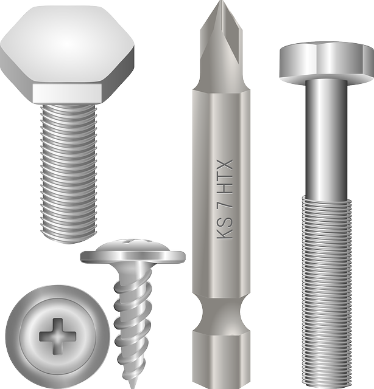

Plusieurs prestations disponibles
Nos Prestations

Travaux d'Électricité
Installation et mise aux normes de
tableau électrique,
remplacement de prises et interrupteurs, dépannage
électrique, installation d'éclairage.
- ✓ Installation tableaux électriques
- ✓ Prises et interrupteurs
- ✓ Dépannage urgent
- ✓ Mise aux normes
Travaux de Plomberie
Réparation et remplacement de tuyaux, détection et
réparation de fuites,
installation sanitaire (lavabo, WC, robinetterie),
débouchage.
- ✓ Réparation de fuites
- ✓ Remplacement tuyauterie
- ✓ Installation sanitaire
- ✓ Débouchage

Petits Travaux & Rénovation
Peinture intérieure et extérieure,
pose de carrelage et parquet, réparations diverses,
montage de meubles, petits travaux de maçonnerie.
- ✓ Peinture murs et plafonds
- ✓ Pose carrelage/parquet
- ✓ Réparations diverses
- ✓ Montage et installation